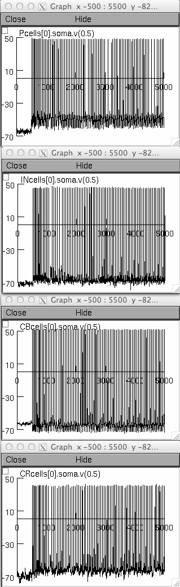

This is the readme for the model associated with: Konstantoudaki X, Papoutsi A, Chalkiadaki K, Poirazi P, Sidiropoulou K (2014) Modulatory effects of inhibition on persistent activity in a cortical microcircuit model. Front Neural Circuits 8:7 This NEURON code was contributed by Kyriaki (Kiki) Sidiropoulou. NEURON is freely available at www.neuron.yale.edu Auto-launch from ModelDB or download an extract this archive, compile the mod files in the experiment folder by using mknrndll (mswin), dragging and dropping the experiment folder onto the mknrndll icon (mac os x), or typing the command "nrnivmodl" on the command line after you have cd'd to the experiment folder (linux/unix). The incell.hoc contains the code for the fast spiking interneuron model, the cb.hoc the code for the regular spiking interneuron model and the cr.hoc the code for the irregular spiking interneuron model. The pfc_pc_temp.hoc contains the code for the morphology and biophysical mechanisms of the pyramidal neurons used. The net.hoc file has all the information regarding the connections between neuron models in the network. The final.hoc file is the experiment file to run the simulation and has information regarding the number of synapses and the weight of each synapse of each different connection. Double click this file (mswin), or drag and drop it onto the nrngui icon (mac os x), or type "nrngui final.hoc" on the command line. Explore the model (for example with modelview) or click the run button. You can also simply use the execultable "run" file if you issued the nrnivmodl command in the experiment folder. After a minute you should see the following graphs: 